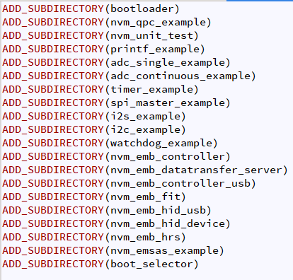

CMake and build procedure
Overview
This page provides informations on how the build system provided in this SDK works and how to use it to build examples or custom applications.
It relies on the use of the ‘cmake’ tool that is a multiplatform tool freely downloadable from the following location:
Here, it is assumed that this tool is already installed on the customer system and is up and running.
Create a new project
While there is still the possibility to create a new project from scratch, it is best to start a new project with a working example. The SDK comes along with several examples that cover many functions that can be part of an end user application.
To do so, copy-paste an example folder (in <sdk>\projects) and rename it.
The following table lists all available examples that cover a wide range of applications.
Example |
Description |
|---|---|
adc_continuous_example |
How to implement a continuous analog value sampling |
adc_single_example |
How to implement a single analog value sampling |
basic_app_tutorial |
A step by step basic application to introduce the EM9305 drivers and libraries |
boot_selector |
How to configure the device to start-up into different modes |
firmware_updater |
An application able to receive a new firmware image over a BLE connection for updating the device’s firmware |
i2c_example |
How to implement an I2C communication with an EEPROM |
i2s_example |
How to output sine waves on the I2S bus |
nvm_emb_controller_usb |
How to implement a BLE controller with a CDCACM USB profile for transport layer |
nvm_emb_controller |
How to implement a simple BLE controller only |
nvm_emb_controller_usb |
How to implement a BLE controller with a CDCACM USB profile for transport layer |
nvm_emb_datatransfer_server |
How to implement a GATT service |
nvm_emb_dts_ext_adv |
How to implement a Data Transfer Server with Extended Advertising. |
nvm_emb_fit |
How to simulate a running speed and a cadence profile sensor |
nvm_emb_hid_device |
How to combine BLE stack with a USB HID profile (mouse/keyboard) |
nvm_emb_hid_usb |
How to implement a HID client application |
nvm_emb_hrs |
How to simulate a heart rate sensor |
nvm_emb_power_control |
A sample application that shows how to manually set the transmit power for advertising and connections |
nvm_emb_rpa |
How to implement a resolvable private address (RPA) application |
nvm_emb_tag |
An example of BLE tag for tracking objects and items |
nvm_emsas_example |
Showcases how to write EM specific commands application |
nvm_fwu_target |
A simple application that can be used to test the firmware update process |
nvm_qpc_example |
How to implement a small application relying on QP/C for real time scheduling |
nvm_unit_test |
How to implement unit test running on the EM9305 device |
printf_example |
How to periodically send message over UART |
qdec_example |
A sample application to showcase the use of the Quadrature Decoder (QDEC) functionnality |
rtc_example |
How to use RTC library |
spi_master_example |
How to use SPI as a master |
spi_slave_example |
How to use SPI as a slave |
ti_example |
How to use Temperature Indicator library |
timer_example |
How to use timers |
watchdog_example |
How to use the internal watchdog |
All the provided examples are accessible from the Sample Applications page. Each example comes with an executable file that will be directly run from the NVM. This is why all the examples provide a nvm_main.c file which contains two functions that are mandatory:
NVM_ConfigModules, where the modifications of the module configuration has to be done.
NVM_ApplicationEntry, which is the entry point of the application
Then, the new project has to be added in the ‘CMakeLists.txt’ file located at the root of the ‘projects’ folder. The following screenshot shows an extract of a typical high level ‘CMakeLists.txt’ file content in which projects are listed:
{kind=link}
Just add your new project at the end of this file in the same way as other examples by using the ‘ADD_SUBDIRECTORY’ statement.
The newly created project also contains its own ‘CMakeLists.txt’ file that needs to be customized to match the new project, at least for the project name.
Here is an example of a ‘CMakeLists.txt’ for one single project:
PROJECT(new_project C)
SET(${PROJECT_NAME}_SRCS
nvm_main.c
)
SET(${PROJECT_NAME}_LIBS
${NVM_COMMON_LIBS}
uart_dma
printf
)
SET(${PROJECT_NAME}_INCLUDES
${COMMON_INCLUDES}
)
APP_IN_NVM()
ARC_EXECUTABLE(${PROJECT_NAME}
${${PROJECT_NAME}_SRCS}
)
ARC_LINK_LIBRARIES(${PROJECT_NAME}
${${PROJECT_NAME}_LIBS}
)
ARC_INCLUDE_DIRECTORIES(${PROJECT_NAME}
${${PROJECT_NAME}_INCLUDES}
)
The ‘PROJECT’ statement introduces the name of the project. This is where the project name shall be changed.
The other ‘SET’ statements are used to defined variable that contain list of items:
list of source code files
list of libraries to link with, because used in the example
list of header files to include
Note that subsets of common libraries and include files are defined through the following variables:
${NVM_COMMON_LIBS}
${COMMON_INCLUDES}
This is a convenient way to include most of the commonly used libraries and headers without bothering with the exact list.
The next statement APP_IN_NVM will instruct the build process to map the final executable in the NVM.
And the last three following statements are used to define how the executable will be built:
the name of the executable to be build from which sources (reusing the variable ‘{PROJECT_NAME}_SRCS’)
the list of libraries to link with
the header files to include
Then everything is in place to start build your project. To complete this process, the init.bat script shall be executed in order to create all the files required for building the applications.
Build process
Building a newly created project target (in section “Create a new project”) shall be compiled this way:
cd <sdk>\build
cmake --build . --target new_project
Link with drivers or libraries
To link with a specific library, you can add it to the list in the CMakeLists.txt.
In the following code, uart_dma and printf are linked.
SET(${PROJECT_NAME}_LIBS
${NVM_COMMON_LIBS}
uart_dma
printf
)
# ...
ARC_LINK_LIBRARIES(${PROJECT_NAME}
${${PROJECT_NAME}_LIBS}
)
NVM_COMMON_LIBS contains common libraries that are linked in most application.
It is possible to remove ${NVM_COMMON_LIBS} and to add only what is required to link your application.
Note
The -Bno_all_archive flag is used by default. Using this flag cleans the unused objects/archives. So removing libraries from the link will not reduce the size of your application binary.
The NVM_COMMON_LIBS variable is defined in <sdk>\cmake\common\common_libs.cmake.
# NVM common libraries.
SET(__NVM_COMMON_LIBS__
Metaware
em_core
em_hw_api
em_system
header_access
nvm_entry
pml
aoad
radio
prot_timer
sleep_timer
rc_calib
sleep_manager
transport
QPC
)
Metaware Libraries
The Metaware Libraries are linked by default. As the linker is cleaning the unused archives/objects (due to -Bno_all_archive used by default), there is no impact on the size of the final binary.
The default version of the Metaware libraries is 2022.09.
Compiler flags
There are 2 types of compilation flags:
The HW related compilation flags
Customizable flags
HW related compilation flags
The HW related compilation flags must not be modified. They are related to the hardware configuration of the ARC core.
The list of flags can be found in <sdk>\common\9305\tool_config\compile.arg.
Customizable flags
The customizable flags are used for configuring the optimization, warnings and other.
The list of flags can be found in <sdk>\cmake\flags.cmake.
# Common compile flags for both C and assembly.
SET(COMPILE_FLAGS
${ARC_FLAGS}
-Wall # Turn on all warnings.
-Wconversion # Warn on conversion (loss of precision).
-Hhostlib= # Specify the library to implement runtime system calls.
-Hnocrt # Suppresses linking of runtime startup file.
-Hon=Long_enums # Needed for a bug in older compilers.
-Hnocopyr # Disables the compiler version and copyright.
-Hnosdata # Don't assume any variables are in the small-data area.
-nostdsysteminc # Do not use the standard include files.
-Os # Optimize for code size.
-Hccm # Assume a closely-coupled memory system with distinct I and D spaces with no cross access.
-mllvm # Additional arguments to forward to LLVM's option processing.
-align-labels=false # Disable alignment of labels.
-Hnoivt # Turn off the auto stuff IVT feature of the compiler.
# -g # Produce debugging information.
-ffunction-sections # This will prevent optimizations in the code where an address
-fdata-sections # may be re-used for multiple variables or functions.
-Wl,-Bdefine:STACKSIZE=${STACKSIZE}
-Hheap=0
# Turn off these warnings (for now).
-Wno-cast-align
# Long jump
-Mb
)
Linker flags
The linker flags are used during the link.
The list of flags can be found in <sdk>\cmake\flags.cmake.
# Add default global LINK flags.
ADD_LD_FLAGS(
-Wl,-q # Don't display copyright message.
-Wl,-Bgrouplib # Search all archives together as a group.
-Wl,-Xnocompress # Never compress the .initdat section.
-zallow_memory_overlap # Allow the memory regions to overlap.
)
Some flags are added in a later stage and depend on the target. For example -Bno_all_archive` flag is added for NVM application.
See the macro APP_IN_NVM in <sdk>\macros\macros_targets_executables.cmake.
# Build application in NVM.
# Optional argument: ROM postfix.
MACRO(APP_IN_NVM)
APP_CLEAR_LOCATION(${ARGN})
SET(APP_IS_IN_NVM True)
SET(APP_LINKER_FOLDER "NVM")
SET(APP_CFLAGS "-DNVM_CODE")
SET(APP_LDFLAGS "-Hentry=NVM_Entry -Bno_all_archive")
ENDMACRO(APP_IN_NVM)
The flag -Bno_all_archive is used to clean the archives/objects that are not referenced.
The flag -Hentry is used to indicate that NVM_Entry is the entry function and the symbol must not be cleaned.
Note
If you want to keep all the archives/objects in the linked binary, you can change -Bno_all_archive to -Ball_archive.
ROM Symbols
The ROM contains a set of functions that any end user application can use to address the following functionalities:
Security (AES, RNG, SHA…)
PML (Power up NVM, voltage monitor, HF clock switching)
NVM driver
GPIO driver
Common functions (WaitUs, CRC32)
A symbol file with the address of each of these functions is provided in the SDK. It is used by the build process which considers these symbols as strong symbols to be linked to the application. As a result, the end user does not have to worry about where a particular function is located. All he has to do is write a statement in his application that calls the function. The linker will actually take care of using the correct function in ROM.